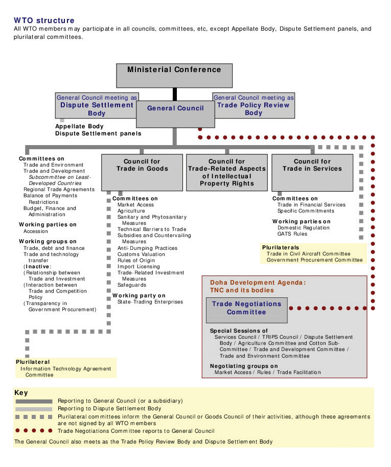
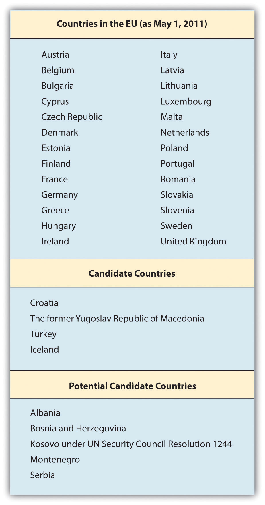
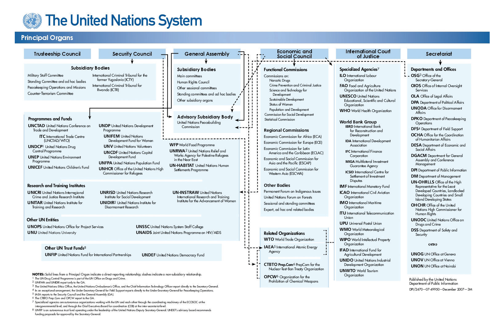

Following World War II, there’s been a shift in thinking toward trade. Nations have moved away from thinking that trade was a zero-sum game of either win or lose to a philosophy of increasing trade for the benefit of all. Additionally, coming out of a second global war that destroyed nations, resources, and the balance of peace, nations were eager for a new model that would not only focus on promoting and expanding free trade but would also contribute to world peace by creating international economic, political, and social cooperative agreements and institutions to support them. While this may sound impossible to achieve, international agreements and institutions have succeeded—at a minimum—in creating an ongoing forum for dialogue on trade and related issues. Reducing the barriers to trade and expanding global and regional cooperation have functioned as flatteners in an increasingly flat world. Section 5.1 "International Economic Cooperation among Nations" and Section 5.2 "Regional Economic Integration" review the specific economic agreements governing global and regional trade—the successes and the challenges. Section 5.3 "The United Nations and the Impact on Trade" also looks at the United Nations as a key global institution and its impact on free and fair global trade. To start, the opening case study assesses one of the more important trade pacts of the past fifty years, the European Union (EU). What has been the impact of the 2010 debt crisis in Greece on the EU, its members, and its outlook?
Before the twentieth century, states (nations) usually increased their power by attacking and absorbing others. In 1500, there were about 500 political units in Europe; by 1900 there were just 25—a consolidation brought by (royal) marriage and dynastic expansion but largely through force.Richard Rosecrance, “Bigger Is Better: The Case for a Transatlantic Economic Union,” Foreign Affairs, May/June 2010, accessed January 2, 2011, http://www.foreignaffairs.com/articles/66225/richard-rosecrance/bigger-is-better.
Source: Wikimedia Commons
In Chapter 2 "International Trade and Foreign Direct Investment", you saw how political and legal factors impacted trade. In this chapter, you’ll learn more about how governments seek to cooperate with one another by entering into trade agreements in order to facilitate business.
The European Union (EU) is one such example. The EU started after World War II, initially as a series of trade agreements between six European countries geared to avoid yet another war on European soil. Six decades later, with free-flowing trade and people, a single currency, and regional peace, it’s easy to see why so many believed that an economic union made the best sense. However, the EU is facing its first major economic crisis, and many pundits are questioning how the EU will handle this major stress test. Will it survive? To better answer this question, let’s look at what really happened during the financial crisis in Europe and in particular in Greece.
At its most basic level, countries want to encourage the growth of their domestic businesses by expanding trade with other countries—primarily by promoting exports and encouraging investment in their nations. Borders that have fewer rules and regulations can help businesses expand easier and more cheaply. While this sounds great in theory, economists as well as businesspeople often ignore the realities of the political and sociocultural factors that impact relationships between countries, businesses, and people.
Critics have longed argued that while the EU makes economic sense, it goes against the long-standing political, social, and cultural history, patterns, and differences existing throughout Europe. Not until the 2010 economic crisis in Greece did these differences become so apparent.
What Really Happened in Greece?
What is the European debt crisis? While experts continue to debate the causes of the crisis, it’s clear that several European countries had been borrowing beyond their capacity.
Let’s look at one such country, Greece, which received a lot of press attention in 2010 and has been considered to have a very severe problem. The financial crisis in the EU, in large part, began in Greece, which had concealed the true levels of its debts. Once the situation in Greece came to light, investors began focusing on the debt levels of other EU countries.
In April 2010, following a series of tax increases and budget cuts, the Greek prime minister officially announced that his country needed an international bailout from the EU and International Monetary Fund (IMF) to deal with its debt crisis.
The crisis began in 2009 when the country faced its first negative economic growth rate since 1993. There was a fast-growing crisis, and the country couldn’t make its debt payments. Its debt costs were rising because investors and bankers became wary of lending more money to the country and demanded higher rates. Economic historians have accused the country of covering up just how bad the deficits were with a massive deficit revision of the 2009 budget.
This drastic bailout was necessitated by the country’s massive budget deficits, the economy’s lack of transparency, and its excess corruption. In Greece, corruption has been so widespread that it’s an ingrained part of the culture. Greeks have routinely used the terms fakelaki, which means bribes offered in envelopes, and rousfeti, which means political favors among friends. Compared with its European member countries, Greece has suffered from high levels of political and economic corruption and low global-business competitiveness.
What’s the Impact on Europe and the EU?
In the ashes of Europe’s debt crisis, some see the seeds of long-term hope. That’s because the threat of bankruptcy is forcing governments to implement reforms that economists argue are necessary to help Europe prosper in a globalized world—but were long viewed politically impossible because of entrenched social attitudes. “Together, Europe’s banks have funneled $2.5 trillion into the five shakiest euro-zone economies: Greece, Ireland, Belgium, Portugal, and Spain.”Stefan Theil, “Worse Than Wall Street,” Newsweek, July 2, 2010, accessed December 28, 2010, http://www.newsweek.com/2010/07/02/worse-than-wall-street.html.
So if it’s just a handful of European countries, why should the other stronger economies in the EU worry? Well, all of the sixteen member countries that use the euro as their currency now have their economies interlinked in a way that other countries don’t. Countries that have joined the euro currency have unique challenges when economic times are tough. A one-size-fits-all monetary policy doesn’t give the member countries the flexibility needed to stimulate their economies. (Chapter 6 "International Monetary System" discusses monetary policy in greater detail.) But the impact of one currency for sixteen markets has made countries like Portugal, Spain, and Greece less cost competitive on a global level. In practice, companies in these countries have to pay their wages and costs in euros, which makes their products and services more expensive than goods from cheaper, low-wage countries such as Poland, Turkey, China, and Brazil. Because they share a single common currency, highly indebted EU countries can’t just devalue their currency to stimulate exports.
Rigid EU rules don’t enable member governments to navigate their country-specific problems, such as deficit spending and public works projects. Of note, a majority of the sixteen countries in the monetary union have completely disregarded the EU’s Stability and Growth Pact by running excessive deficits—that is, borrowing or spending more than the country has in its coffers. Reducing deficits and cutting social programs often comes at a high political cost.
As Steven Erlanger noted in the New York Times,
The European Union and the 16 nations that use the euro face two crises. One is the immediate problem of too much debt and government spending. Another is the more fundamental divide, roughly north and south, between the more competitive export countries like Germany and France and the uncompetitive, deficit countries that have adopted the high wages and generous social protections of the north without the same economic ethos of strict work habits, innovation, more flexible labor markets and high productivity.
As Europe grapples with its financial crisis, the more competitive, wealthier countries are reluctantly rescuing more profligate economies, including Greece and Ireland, from fiscal and bank woes, while imposing drastic cuts in spending there.Steven Erlanger, “Euro Zone Is Imperiled by North-South Divide,” New York Times, December 2, 2010, accessed January 2, 2011, http://www.nytimes.com/2010/12/03/world/europe/03divide.html?_r=1&ref=stevenerlanger.
Early on, EU critics had expressed concern that countries wouldn’t want to give up their sovereign right to make economic and political policy. Efforts to create a European constitution and move closer to a political union fell flat in 2005, when Belgium and France rejected the efforts. Critics suggest that a political union is just not culturally feasible. European countries have deep, intertwined histories filled with cultural and ethnic biases, old rivalries, and deep-rooted preferences for their own sovereignty and independence. This first major economic crisis has brought this issue to the forefront.
There were two original arguments against the creation of the EU and euro zone: (1) fiscal independence and sovereignty and (2) centuries-old political, economic, social, and cultural issues, biases, and differences.
Despite these historical challenges, most Europeans felt that the devastation of two world wars were worse. World War I started as a result of the cumulative and somewhat convoluted sequence of political, economic, and military rivalries between European countries and then added in Japan and the United States. World War II started after Germany, intent on expanding its empire throughout Europe, invaded Poland in 1939. All told, these two wars led to almost one hundred million military and civilian deaths, shattered economies, destroyed industries, and severely demoralized and exhausted the global population. European and global leaders were determined that there would never be another world war. This became the early foundations of today’s global and regional economic and political alliances, in particular the EU and the United Nations (UN).
Of course, any challenges to the modern-day EU have brought back old rivalries and biases between nations. Strong economies, like Germany, have been criticized for condescending to the challenges in Greece, for example when German commentators used negative Greek stereotypes. Germany was also initially criticized for possibly holding up a bailout of Greece, because it was unpopular with German voters.
European leaders first joined with the IMF in May 2010 and agreed on a $1 trillion rescue fund for financially troubled countries. Then, Greece announced deep budget cuts, Spain cut employer costs, and France raised its retirement age. France also joined Germany and the United Kingdom in imposing harsh budget cuts. Governments now face a crucial test of political will. Can they implement the reforms they’ve announced? The short-term response to those moves has been a wave of strikes, riots, and—in Spain, Italy, Ireland, and France—demonstrations.
Yet supporters of the EU argue that the mutual common interests of the EU countries will ensure that reforms are implemented. Memories of the fragility of the continent after the wars still lingers. Plus, more realistically, Europeans know that in order to remain globally competitive, they will be stronger as a union than as individual countries—particularly when going up against such formidable economic giants as the United States and China.
What Does This All Mean for Businesses?
The first and most relevant reminder is that global business and trade are intertwined with the political, economic, and social realities of countries. This understanding has led to an expansion of trade agreements and country blocs, all based on the fundamental premise that peace, stability, and trade are interdependent. Both the public and private sectors have embraced this thinking.
Despite the crises in varying European countries, businesses still see opportunity. UK-based Diageo, the giant global beverage company and maker of Ireland’s famous Guinness beer, just opened a new distillery in Roseisle, Scotland, located in the northern part of the United Kingdom.
The new distillery is a symbol of optimism for the industry after the uncertainty of the global economic downturn. The scotch industry had been riding high when the financial crisis hit and the subsequent collapse in demand in 2009 ricocheted through important markets like South Korea, where sales contracted by almost 25 percent. Sales in Spain and Singapore were down 5 percent and 9 percent respectively. There was also evidence of drinkers trading down to cheaper spirits—such as hard-up Russians returning to vodka.
David Gates, global category director for whiskies at Diageo, says emerging markets are leading the recovery: “The places we’re seeing demand pick up quickest are Asia, Latin America and parts of Eastern Europe. Southern Europe is more concerning because Spain and Greece, which are big scotch markets, remain in very difficult economic situations.”…
The renaissance of Scotland’s whisky industry has had little to do with Scottish consumption. Drinks groups have concentrated on the emerging middle-class in countries such as Brazil, where sales shot up 44 percent last year.
In Mexico whisky sales were up 25 percent as locals defected from tequila.Zoe Wood, “Diageo Opens the First Major New Whisky Distillery for a Generation,” Guardian, October 3, 2010, accessed January 2, 2011, http://www.guardian.co.uk/business/2010/oct/03/diageo-roseisle-distillery-opens.
While Europe continues to absorb the impact of the 2008 global recession, there is hope for the future.
It is too soon to write off the EU. It remains the world’s largest trading block. At its best, the European project is remarkably liberal: built around a single market of 27 rich and poor countries, its internal borders are far more porous to goods, capital and labour than any comparable trading area….
For free-market liberals, the enlarged union’s size and diversity is itself an advantage. By taking in eastern countries with lower labour costs and workers who are far more mobile than their western cousins, the EU in effect brought globalisation within its own borders. For economic liberals, that flexibility and dynamism offers Europe’s best chance of survival.“Staring into the Abyss,” Economist, July 8, 2010, accessed December 28, 2010, http://www.economist.com/node/16536898.
Governments operate first from tax revenues before resorting to borrowing. Countries like Saudi Arabia, Brunei, or Qatar that have huge tax revenues from oil don’t need to borrow. However, countries that don’t have these huge tax revenues might need to borrow money. In addition, if tax revenues go down—for example in a recession or because taxes aren’t paid or aren’t collected properly—then countries might need to borrow.
Countries usually borrow for four main reasons:
When countries borrow, they increase their debt. When debt levels become too high, investors get concerned that the country may not be able to repay the money. As a result, investors and bankers (in the form of the credit market) may view the debt as higher risk. Then, investors or bankers ask for a higher interest rate or return as compensation for the higher risk. This, in turn, leads to higher borrowing costs for the country.
The national deficit is the amount of borrowing that a country does from either the private sector or other countries. However, the national deficit is different from the current account deficit, which refers to imports being greater than exports.
Even healthy countries run national deficits. For example, in the case of borrowing to invest long term in domestic facilities and programs, the rationale is that a country is investing in its future by improving infrastructure, much like a business would borrow to build a new factory.
(AACSB: Ethical Reasoning, Multiculturalism, Reflective Thinking, Analytical Skills)
In the post–World War II environment, countries came to realize that a major component of achieving any level of global peace was global cooperation—politically, economically, and socially. The intent was to level the trade playing field and reduce economic areas of disagreement, since inequality in these areas could lead to more serious conflicts. Among the initiatives, nations agreed to work together to promote free trade, entering into bilateral and multilateral agreements. The General Agreement on Tariffs and Trade (GATT) resulted from these agreements. In this section, you’ll review GATT—why it was created and what its historical successes and challenges are. You’ll then look at the World Trade Organization (WTO), which replaced GATT in 1995, and study the impact of both these organizations on international trade. While GATT started as a set of rules between countries, the WTO has become an institution overseeing international trade.
The General Agreement on Tariffs and Trade (GATT)A series of rules governing trade that were first created in 1947 by twenty-three countries. is a series of rules governing trade that were first created in 1947 by twenty-three countries. By the time it was replaced with the WTO, there were 125 member nations. GATT has been credited with substantially expanding global trade, primarily through the reduction of tariffs.
The basic underlying principle of GATT was that trade should be free and equal. In other words, countries should open their markets equally to member nations, and there should be neither discrimination nor preferential treatment. One of GATT’s key provisions was the most-favored-nation clause (MFN)A GATT provision that required member countries to automatically extend to all member countries the same benefits, usually tariff reductions, they agreed on with any other countries.. It required that once a benefit, usually a tariff reduction, was agreed on between two or more countries, it was automatically extended to all other member countries. GATT’s initial focus was on tariffs, which are taxes placed on imports or exports.
MFN Is Everywhere
As a concept, MFN can be seen in many aspects of business; it’s an important provision. Companies require MFN of their trading partners for pricing, access, and other provisions. Corporate or government customers require it of the company from which they purchase goods or services. Venture capitalists (VC) require it of the companies in which they invest. For example, a VC wants to make sure that it has negotiated the best price for equity and will ask for this provision in case another financier negotiates a cheaper purchase price for the equity. The idea behind the concept of MFN is that the country, company, or entity that has MFN status shouldn’t be disadvantaged in comparison with others in similar roles as a trading partner, buyer, or investor. In practice, the result is that the signing party given MFN status benefits from any better negotiation and receives the cheaper price point or better term. This terminology is also used in sales contracts or other business legal agreements.
Gradually, the GATT member countries turned their attention to other nontariff trade barriers. These included government procurement and bidding, industrial standards, subsidies, duties and customs, taxes, and licensing. GATT countries agreed to limit or remove trade barriers in these areas. The only agreed-on export subsidies were for agricultural products. Countries agreed to permit a wider range of imported products to enter their home markets by simplifying licensing guidelines and developing consistent product standards between imports and domestically produced goods. Duties had to result from uniform and consistent procedures for the same foreign and domestically produced items.
The initial successes in these categories led some countries to get more creative with developing barriers to trade as well as entering into bilateral agreements and providing more creative subsidies for select industries. The challenge for the member countries of GATT was enforcement. Other than complaining and retaliating, there was little else that a country could do to register disapproval of another country’s actions and trade barriers.
Gradually, trade became more complex, leading to the Uruguay Round beginning in 1986 and ending in 1994. These trade meetings were called rounds in reference to the series of meetings among global peers held at a “roundtable.” Prior to a round, each series of trade discussions began in one country. The round of discussions was then named after that country. It sometimes took several years to conclude the topic discussions for a round. The Uruguay Round took eight years and actually resulted in the end of GATT and the creation of the World Trade Organization (WTO). The current Doha Development Round began in 2001 and is actually considered part of the WTO.
The World Trade Organization (WTO)The organization that succeeded GATT and came into effect on January 1, 1995. It is the only institutional body charged with facilitating free and fair trade between member nations. developed as a result of the Uruguay Round of GATT. Formed officially on January 1, 1995, the concept of the WTO had been in development for several years. When the WTO replaced GATT, it absorbed all of GATT’s standing agreements. In contrast to GATT, which was a series of agreements, the WTO was designed to be an actual institution charged with the mission of promoting free and fair trade. As explained on its website, the WTO “is the only global international organization dealing with the rules of trade between nations. At its heart are the WTO agreements, negotiated and signed by the bulk of the world’s trading nations and ratified in their parliaments. The goal is to help producers of goods and services, exporters, and importers conduct their business.”“What Is the WTO?,” World Trade Organization, accessed December 29, 2010, http://www.wto.org/english/thewto_e/whatis_e/whatis_e.htm.
The global focus on multilateral trade agreements and cooperation has expanded trade exponentially. “The past 50 years have seen an exceptional growth in world trade. Merchandise exports grew on average by 6 percent annually. Total trade in 2000 was 22-times the level of 1950. GATT and the WTO have helped to create a strong and prosperous trading system contributing to unprecedented growth.”“The Multilateral Trading System—Past, Present and Future,” World Trade Organization, accessed December 29, 2010, http://www.wto.org/english/thewto_e/whatis_e/inbrief_e/inbr01_e.htm.
The WTO’s primary purpose is to serve as a negotiating forum for member nations to dispute, discuss, and debate trade-related matters. More than just a series of trade agreements, as it was under GATT, the WTO undertakes discussions on issues related to globalization and its impact on people and the environment, as well as trade-specific matters. It doesn’t necessarily establish formal agreements in all of these areas but does provide a forum to discuss how global trade impacts other aspects of the world.
Headquartered in Geneva, Switzerland, the current round is called the Doha Round and began in 2001. With 153 member nations, the WTO is the largest, global trade organization. Thirty nations have observer status, and many of these are seeking membership. With so many member nations, the concept of MFN has been eased into a new principle of normal trade relations (NTR). Advocates say that no nation really has a favored nation status; rather, all interact with each other as a normal part of global trade.
Figure 5.2 The Structure of the WTO
Source: World Trade Organization, 2011.
The biggest change from GATT to the WTO is the provision for the settlement of disputes. If a country finds another country’s trade practices unfair or discriminatory, it may bring the charges to the WTO, which will hear from both countries and mediate a solution.
The WTO has also undertaken the effort to focus on services rather than just goods. Resulting from the Uruguay Round, the General Agreement on Trade in Services (GATS) seeks to reduce the barriers to trade in services. Following the GATT commitment to nondiscrimination, GATS requires member nations to treat foreign service companies as they would domestic ones. For example, if a country requires banks to maintain 10 percent of deposits as reserves, then this percentage should be the same for foreign and domestic banks. Services have proven to be more complex to both define and regulate, and the member nations are continuing the discussions.
Similar to GATS is the WTO Agreement on Trade-Related Aspects of Intellectual Property Rights (TRIPS). Intellectual property refers to just about anything that a person or entity creates with the mind. It includes inventions, music, art, and writing, as well as words, phrases, sayings, and graphics—to name a few. The basic premise of intellectual property rights (IPR) law is that the creator of the property has the right to financially benefit from his or her creation. This is particularly important for protecting the development for the creation, known as the research and development (R&D) costs. Companies can also own the intellectual property that their employees generate. This section focuses on the protection that countries agree to give to intellectual property created in another country. (For more information on IPR, see Chapter 13 "Harnessing the Engine of Global Innovation", Section 13.2 "Intellectual Property Rights around the Globe".)
Over the past few decades, companies have become increasingly diligent in protecting their intellectual property and pursuing abusers. Whether it’s the knock-off designer handbag from China that lands on the sidewalks of New York or the writer protecting her thoughts in the written words of a book (commonly understood as content), or the global software company combating piracy of its technical know-how, IPR is now formally a part of the WTO agreements and ongoing dialogue.
Agriculture and textiles are two key sectors in which the WTO faces challenges. Trade in agriculture has been impacted by export-country subsidies, import-country tariffs and restrictions, and nontariff barriers. Whether the United States provides low-cost loans and subsidies to its farmers or Japan restricts the beef imports, agriculture trade barriers are an ongoing challenge for the WTO. Global companies and trade groups that support private-sector firms seek to have their governments raise critical trade issues on their behalf through the WTO.
For example, Japan’s ban of beef imports in response to mad cow disease has had a heavy impact on the US beef industry.
At the moment, unfortunately there’s some distance between Japan and the U.S.,” Japan Agriculture Minister Hirotaka Akamatsu told reporters in 2010 after meeting [US Agriculture Secretary Tom] Vilsack in Tokyo. “For us, food safety based on Japan’s scientific standards is the priority. The OIE standards are different from the Japanese scientific ones.
The U.S. beef industry is losing about $1 billion a year in sales because of the restrictions, according to the National Cattlemen’s Beef Association, [a trade group supporting the interests of American beef producers]. Japan was the largest foreign buyer of U.S. beef before it banned all imports when the first case of the brain-wasting disease, also known bovine spongiform encephalopathy [i.e., mad cow disease], was discovered in the U.S.
The ban was eased in 2005 to allow meat from cattle aged 20 months or less, which scientists say are less likely to have contracted the fatal illness….
Japan was the third-largest destination for U.S. beef [in 2009], with trade totaling $470 million, up from $383 million in 2008, according to the U.S. Meat Export Federation. That compares with $1.39 billion in 2003.
Mexico and Canada were the biggest buyers of U.S. beef [in 2009].Jae Hur and Ichiro Suzuki, “Japan, U.S. to Continue Dialogue on Beef Import Curbs (Update 1),” BusinessWeek, April 7, 2010, accessed December 29, 2010, http://www.businessweek.com/news/2010-04-07/japan-u-s-to-continue-dialogue-on-beef-import-curbs-update1-.html.
The role of the WTO is to facilitate agreements in difficult bilateral and multilateral trade disputes, but this certainly isn’t easy. Japan’s reluctance for American beef may appear to be the result of mad cow disease, but business observers note Japan’s historical cultural preference for Japanese goods, which the country often claims are superior. A similar trade conflict was triggered in the 1980s when Japan discouraged the import of rice from other countries. The prevailing Japanese thought was that its local rice was easier for the Japanese to digest. After extensive discussions in the Uruguay Round, on “December 14, 1993 the Japanese government accepted a limited opening of the rice market under the GATT plan.”“Japan Rice Trade,” case study on American University website, accessed January 2, 2010, http://www1.american.edu/ted/japrice.htm.
Antidumping is another area on which the WTO has focused its attention. Dumping occurs when a company exports to a foreign market at a price that is either lower than the domestic prices in that country or less than the cost of production. Antidumping charges can be harder to settle, as the charge is against a company and not a country. One example is in India, which has, in the past, accused Japan and Thailand of dumping acetone, a chemical used in drugs and explosives, in the Indian market. In an effort to protect domestic manufacturers, India has raised the issue with the WTO. In fact, India was second only to Argentina among the G-20 (or Group of Twenty) nations in initiating antidumping investigations during 2009, according to a recent WTO report.Press Trust of India, “Govt Initiates Anti-Dumping Probe against Acetone Imports,” Business Standard, November 3, 2009, accessed December 29, 2010, http://www.business-standard.com/india/news/govt-initiates-anti-dumping-probe-against-acetone-imports/375153/.
While the end of the Doha Round is uncertain, the future for the WTO and any related organizations remains strong. With companies and countries facing a broader array of trade issues than ever before, the WTO plays a critical role in promoting and ensuring free and fair trade. Many observers expect that the WTO will have to emphasize the impact of the Internet on trade. In most cases, the WTO provides companies and countries with the best options to dispute, discuss, and settle unfair business and trade practices.
(AACSB: Reflective Thinking, Analytical Skills)
Read the following excerpt from a 2010 Wall Street Journal article about the WTO:
The World Trade Organization formally condemned European subsidies to civil-aircraft maker Airbus, concluding the first half of the most expensive trade dispute in WTO history.
Its main finding was that more than $20 billion in low-interest government loans used to develop six models of passenger jet constituted prohibited export subsidies.
The ruling could force the parent company of Airbus, European Aeronautic Defence & Space Co., to repay some aid money or risk giving the U.S. the right to raise import tariffs in retaliation on goods imported from Europe, such as cars, wines and cheese.John W. Miller and Daniel Michaels, “WTO Condemns Airbus Subsidies,” Wall Street Journal, July 1, 2010, accessed December 29, 2010, http://online.wsj.com/article/SB10001424052748703426004575338773153793294.html.
Do you agree with the WTO’s assessment? Is it fair for the United States to retaliate against the airplane manufacturer with tariffs on other imported products? How might US consumers react to additional taxes imposed on popular imported products such as cars, wine, and cheese?
Regional economic integration has enabled countries to focus on issues that are relevant to their stage of development as well as encourage trade between neighbors.
There are four main types of regional economic integration.
In the past decade, there has been an increase in these trading blocs with more than one hundred agreements in place and more in discussion. A trade bloc is basically a free-trade zone, or near-free-trade zone, formed by one or more tax, tariff, and trade agreements between two or more countries. Some trading blocs have resulted in agreements that have been more substantive than others in creating economic cooperation. Of course, there are pros and cons for creating regional agreements.
The pros of creating regional agreements include the following:
The cons involved in creating regional agreements include the following:
There are more than one hundred regional trade agreements in place, a number that is continuously evolving as countries reconfigure their economic and political interests and priorities. Additionally, the expansion of the World Trade Organization (WTO) has caused smaller regional agreements to become obsolete. Some of the regional blocs also created side agreements with other regional groups leading to a web of trade agreements and understandings.
The North American Free Trade Agreement (NAFTA) came into being during a period when free trade and trading blocs were popular and positively perceived. In 1988, the United States and Canada signed the Canada–United States Free Trade Agreement. Shortly after it was approved and implemented, the United States started to negotiate a similar agreement with Mexico. When Canada asked to be party to any negotiations to preserve its rights under the most-favored-nation clause (MFN), the negotiations began for NAFTA, which was finally signed in 1992 and implemented in 1994.
The goal of NAFTA has been to encourage trade between Canada, the United States, and Mexico. By reducing tariffs and trade barriers, the countries hope to create a free-trade zone where companies can benefit from the transfer of goods. In the 1980s, Mexico had tariffs as high as 100 percent on select goods. Over the first decade of the agreement, almost all tariffs between Mexico, Canada, and the United States were phased out.
The rules governing origin of content are key to NAFTA. As a free trade agreement, the member countries can establish their own trading rules for nonmember countries. NAFTA’s rules ensure that a foreign exporter won’t just ship to the NAFTA country with the lowest tariff for nonmember countries. NAFTA rules require that at least 50 percent of the net cost of most products must come from or be incurred in the NAFTA region. There are higher requirements for footwear and cars. For example, this origin of content rule has ensured that cheap Asian manufacturers wouldn’t negotiate lower tariffs with one NAFTA country, such as Mexico, and dump cheap products into Canada and the United States. Mexican maquiladoras have fared well in this arrangement by being the final production stop before entering the United States or Canada. Maquiladoras are production facilities located in border towns in Mexico that take imported materials and produce the finished good for export, primarily to Canada or the United States.
Canadian and US consumers have benefited from the lower-cost Mexican agricultural products. Similarly, Canadian and US companies have sought to enter the expanding Mexican domestic market. Many Canadian and US companies have chosen to locate their manufacturing or production facilities in Mexico rather than Asia, which was geographically far from their North American bases.
When it was introduced, NAFTA was highly controversial, particularly in the United States, where many felt it would send US jobs to Mexico. In the long run, NAFTA hasn’t been as impactful as its supporters had hoped nor as detrimental to workers and companies as its critics had feared. As part of NAFTA, two side agreements addressing labor and environmental standards were put into place. The expectation was that these side agreements would ensure that Mexico had to move toward improving working conditions.
Mexico has fared the best from NAFTA as trade has increased dramatically. Maquiladoras in Mexico have seen a 15 percent annual increase in income. By and large, Canadians have been supportive of NAFTA and exports to the region have increased in the period since implementation. “Tri-lateral [merchandise] trade has nearly tripled since NAFTA came into force in 1994. It topped $1 trillion in 2008.”Foreign Affairs and International Trade Canada, “Fast Facts: North American Free Trade Agreement,” December 15, 2009, accessed December 30, 2010, http://www.international.gc.ca/trade-agreements-accords-commerciaux/agr-acc/nafta-alena/fast_facts-faits_saillants.aspx?lang=eng.
Given the 2008 global economic recession and challenging impact on the EU, it isn’t likely that NAFTA will move beyond the free-trade zone status to anything more comprehensive (e.g., the EU’s economic union). In the opening case study, you read about the pressures on the EU and the resistance by each of the governments in Europe to make policy adjustments to address the recession. The United States, as the largest country member in NAFTA, won’t give up its rights to independently determine its economic and trade policies. Observers note that there may be the opportunity for NAFTA to expand to include other countries in Latin America.William M. Pride, Robert James Hughes, and Jack R. Kapoor, Business, 9th ed. (Boston: Houghton Mifflin, 2008), 89, accessed April 30, 2011, http://books.google.com/books?id=z2tEhXnm1rAC&pg=PA88&lpg=PA88&dq=will+chile+join+nafta+2009 &source=bl&ots=iohSe7YV0E&sig=BjQr2KOx0lsrAGhv5vMqeb9LhFU&hl=en&ei=hLu8 TZ3LPNDAgQeZusjqBQ&sa=X&oi=book_result&ct=result&resnum=6&ved=0CDoQ6A EwBQ#v=onepage&q=will%20chile%20join%20nafta%202009&f=false. Chile was originally supposed to be part of NAFTA in 1994, but President Clinton was hampered by Congress in his ability to formalize that decision.David A. Sanger, “Chile Is Admitted as North American Free Trade Partner,” New York Times, December 12, 1994, accessed April 30, 2011, http://www.nytimes.com/1994/12/12/world/chile-is-admitted-as-north-american-free-trade-partner.html. Since then, Canada, Mexico, and the United States have each negotiated bilateral trade agreements with Chile, but there is still occasional mention that Chile may one day join NAFTA.Anthony DePalma, “Passing the Torch on a Chile Trade Deal,” New York Times, January 7, 2001, accessed April 30, 2011, http://www.nytimes.com/2001/01/07/business/economic-view-passing-the-torch-on-a-chile-trade-deal.html.
Mexico, NAFTA, and the Maquiladoras
The Mexican economy has undergone dramatic changes during the last decade and a half as the country has become integrated into the global marketplace. Once highly protected, Mexico is now open for business. Successive governments have instituted far-reaching economic reforms, which have had a major impact on the way business is conducted. The scale of business has changed as well. Forced to compete with large multinationals and Mexican conglomerates, many traditional family-owned firms have had to close because they were unable to compete in the global marketplace.
NAFTA has added to the already-strong US influence on Mexico’s corporate and business practices. In particular, competitiveness and efficiency have become higher priorities, although company owners and managers still like to surround themselves with people they know and to groom their sons and sometimes their daughters to be their successors. US influence is also pervasive in the products and services offered throughout Mexico.
Mexico has always had a strong entrepreneurial business culture, but until NAFTA, it was protected from the pressures of international finance and the global marketplace. Business and particularly interpersonal business relationships were viewed as something that should be pleasurable, like other important aspects of life.
Long-term relationships are still the foundation on which trust is established and business is built. In Mexico, patience and the willingness to wait are still highly valued—and necessary—in business transactions. This is slowly changing, spurred in part by an aggressive cadre of young professionals who pursued graduate education in the United States.
Since the mid-1960s, production facilities known as maquiladoras have been a regular feature of Mexican border towns, especially along the Texas and New Mexico borders. US multinational companies, such as John Deere, Zenith, Mattel, and Xerox, run the majority of the more than 3,600 maquiladoras in northern Mexico. Billions of dollars’ worth of products—from televisions to clothes to auto parts—are assembled in maquiladoras and then shipped back, tax free, to the United States for sale to US consumers.
Maquiladoras employ more than a million Mexicans, mostly unskilled women in their twenties and early thirties who work long hours. Wages and benefits are generally poor but much better than in the rest of Mexico. The huge growth in trade between the United States and Mexico has greatly expanded the role—and scale—of these assembly operations.
Along with the benefits, challenges have also come with the increased trade. A large number of Mexicans are concerned that wealth is distributed more unevenly than ever. For example, many commentators see the political situation in the state of Chiapas as underscoring the alienation large groups have suffered as a result of the opening of the Mexican economy to global forces. A rural region in southern Mexico, Chiapas is home to extremely poor Mayan, Ch’ol, Zoque, and Lacandón Indians. Although it is the poorest state in Mexico, Chiapas has the richest natural resources, including oil, minerals, and electrical power.
On January 1, 1994, the day NAFTA officially took effect, a group of Indian peasants, commanded by Subcomandante Marcos, rose up in armed rebellion. This was shocking not only to Mexico’s leadership but to the international community. The unrest in Chiapas stems from long-standing economic and social injustice in the region and from the Indians’ isolation and exploitation by the local oligarchy of landowners and mestizo bosses (caciques). While NAFTA clearly advanced the goals of free trade, global businesses are often forced to deal with local economic, political, and social realities within a country.
The Mexican government has indicated that improving the social conditions in the region is a high priority. However, only partial accords have been reached between the government and the peasants. At the same time, the army continues to exert tight control over the state, particularly in and around towns where residents are known to support the rebels.
The low standard of living in Chiapas and of Indians throughout Mexico remains a significant challenge for the Mexican government. In the years following the Chiapas uprising, poverty in southern Mexico has risen to about 40 percent, while in the north, poverty has decreased thanks to closer economic links with the United States.CultureQuest Doing Business in Mexico (New York: Atma Global, 2011).
The Common Market of the South, Mercado Común del Sur or MERCOSUR, was originally established in 1988 as a regional trade agreement between Brazil and Argentina and then was expanded in 1991 to include Uruguay and Paraguay. Over the past decade, Bolivia, Chile, Colombia, Ecuador, and Peru have become associate members, and Venezuela is in the process for full membership.
MERCOSUR constituents compose nearly half of the wealth created in all of Latin America as well as 40 percent of the population. Now the world’s fourth-largest trading bloc after the EU, NAFTA, and the Association of South East Asian Nations (ASEAN),Joanna Klonsky and Stephanie Hanson, “Mercosur: South America’s Fractious Trade Bloc,” Council on Foreign Relations, August 20, 2009, accessed April 30, 2011, http://www.cfr.org/trade/mercosur-south-americas-fractious-trade-bloc/p12762. the group has been strategically oriented to develop the economies of its constituents, helping them become more internationally competitive so that they would not have to rely on the closed market arena. MERCOSUR has brought nations with long-standing rivalries together. Although this is an economic trade initiative, it has also been designed with clear political goals. MERCOSUR is committed to the consolidation of democracy and the maintenance of peace throughout the southern cone. For example, it has taken stride to reach agreements between Brazil and Argentina in the nuclear field.Joanna Klonsky and Stephanie Hanson, “Mercosur: South America’s Fractious Trade Bloc,” Council on Foreign Relations, August 20, 2009, accessed April 30, 2011, http://www.cfr.org/trade/mercosur-south-americas-fractious-trade-bloc/p12762.
MERCOSUR has emerged as one of the most dynamic and imaginative initiatives in the region. Surging trade, rising investment, and expanding output are the economic indicators that point to the group’s remarkable achievement. More than this, the integration is helping transform national relations among South American nations and with the world as a whole, forging a new sense of shared leadership and shared purpose, which is sending ripples of hope across the continent and beyond.
The Caribbean Community and Common Market (CARICOM), or simply the Caribbean Community, was formed in 1973 by countries in the Caribbean with the intent of creating a single market with the free flow of goods, services, labor, and investment.Caribbean Community (CARICOM) Secretariat website, accessed April 30, 2011, http://www.caricom.org/index.jsp. The Andean Community (called the Andean Pact until 1996)Andean Community of Nations—Andean Pact website, accessed April 30, 2011, http://www.grouplamerica.com/andean_pact.htm. is a free trade agreement signed in 1969 between Bolivia, Chile, Colombia, Ecuador, and Peru. Eventually Chile dropped out, while Venezuela joined for about twenty years and left in 2006. This trading bloc had limited impact for the first two decades of its existence but has experienced a renewal of interest after MERCOSUR’s implementation. In 2007, MERCOSUR members became associate members of the Andean Community, and more cooperative interaction between the trading groups is expected.European Commission, “Andean Community Regional Strategy Paper 2007–2013,” December 4, 2007, accessed April 30, 2011, http://www.eeas.europa.eu/andean/rsp/07_13_en.pdf.
The Dominican Republic–Central America–United States Free Trade Agreement (CAFTA-DR) is a free trade agreement signed into existence in 2005. Originally, the agreement (then called the Central America Free Trade Agreement, or CAFTA) encompassed discussions between the US and the Central American countries of Costa Rica, El Salvador, Guatemala, Honduras, and Nicaragua. A year before the official signing, the Dominican Republic joined the negotiations, and the agreement was renamed CAFTA-DR.“Dominican Republic–Central America–United States Free Trade Agreement (CAFTA-DR),” Export.gov, accessed April 30, 2011, http://www.export.gov/FTA/cafta-dr/index.asp.
The goal of the agreement is the creation of a free trade area similar to NAFTA. For free trade advocates, the CAFTA-DR is also seen as a stepping stone toward the eventual establishment of the Free Trade Area of the Americas (FTAA)—the more ambitious grouping for a free trade agreement that would encompass all the South American and Caribbean nations as well as those of North and Central America (except Cuba). Canada is currently negotiating a similar treaty called the Canada Central American Free Trade Agreement. It’s likely that any resulting agreements will have to reconcile differences in rules and regulations with NAFTA as well as any other existing agreements.“What Is CAFTA?,” CAFTA Intelligence Center, accessed April 30, 2011, http://www.caftaintelligencecenter.com/subpages/What_is_CAFTA.asp.
As a result of CAFTA-DR, more than 80 percent of goods exported from the United States into the region are no longer subject to tariffs.“Dominican Republic–Central America–United States Free Trade Agreement (CAFTA-DR),” Export.gov, accessed April 30, 2011, http://www.export.gov/FTA/cafta-dr/index.asp. Given its physical proximity, Florida is the main investment gateway to the CAFTA-DR countries: about three hundred multinational firms have their Latin American and Caribbean regional headquarters in Florida. In all, more than two thousand companies headquartered outside the United States operate in Florida.
US companies, for example, sell more than $25 billion in products to the Latin American and Caribbean regions annually, ranking it among the top US export markets. With the removal of virtually all tariffs and other barriers to trade, the CAFTA-DR agreement is making commerce with these countries even easier, opening opportunities to a range of industries. At the same time, it’s making the CAFTA-DR countries richer and increasing the purchasing power of their citizens.
For international companies looking to access these markets, the United States, recognized worldwide for its stable regulatory and legal framework and for its robust infrastructure, is the most logical place to set up operations. And within the United States, no location is as well positioned as Florida to act as the gateway to the CAFTA-DR markets. For a variety of reasons—from geography and language to well-developed business and family connections—this is a role that Florida has been playing very successfully for a number of years and which, with the implementation of CAFTA-DR, is only gaining in importance.Enterprise Florida, “Your Business: International,” The CAFTA Intelligence Center, accessed December 30, 2010, http://www.caftaintelligencecenter.com/subpages/location-International.asp.
The European Union (EU) is the most integrated form of economic cooperation. As you learned in the opening case study, the EU originally began in 1950 to end the frequent wars between neighboring countries in the Europe. The six founding nations were France, West Germany, Italy, and the Benelux countriesThe grouping of Belgium, Luxembourg, and the Netherlands. (Belgium, Luxembourg, and the Netherlands), all of which signed a treaty to run their coal and steel industries under a common management. The focus was on the development of the coal and steel industries for peaceful purposes.
In 1957, the six nations signed the Treaty of Rome, which established the European Economic Community (EEC) and created a common market between the members. Over the next fifty years, the EEC added nine more members and changed its name twice—to European Community (EC) in the 1970s and the European Union (EU) in 1993.“History of the European Union,” Europa, accessed April 30, 2011, http://europa.eu/abc/history/index_en.htm.
The entire history of the transformation of the EEC to the EU has been an evolutionary process. However, the Treaty of Maastricht in 1993 stands out as an important moment; it’s when the real economic union was created. With this treaty, the EU identified three aims. The first was to establish a single, common currency, which went into effect in 1999. The second was to set up monetary and fiscal targets for member countries. Third, the treaty called for a political union, which would include the development of a common foreign and defense policy and common citizenship. The opening case study addressed some of the current challenges the EU is facing as a result of the impact of these aims. Despite the challenges, the EU is likely to endure given its historic legacy. Furthermore, a primary goal for the development of the EU was that Europeans realized that they needed a larger trading platform to compete against the US and the emerging markets of China and India. Individually, the European countries would never have the economic power they now have collectively as the EU.
Today, the EU has twenty-seven member countries. Croatia, Iceland, Macedonia, and Turkey are the next set of candidates for future membership. In 2009, the twenty-seven EU countries signed the Treaty of Lisbon, which amends the previous treaties. It is designed to make the EU more democratic, efficient, and transparent and to tackle global challenges, such as climate change, security, and sustainable development.
The European Economic Area (EEA) was established on January 1, 1994, following an agreement between the member states of the European Free Trade Association (EFTA) and the EC (later the EU). Specifically, it has allowed Iceland (now an EU candidate), Liechtenstein, and Norway to participate in the EU’s single market without a conventional EU membership. Switzerland has also chosen to not join the EU, although it is part of similar bilateral agreements.
Figure 5.3 Countries in the EU (as of May 1, 2011)
Source: “The Member Countries of the European Union,” Europa, accessed May 1, 2011, http://europa.eu/about-eu/member-countries/index_en.htm.
Central European Free Trade Agreement (CEFTA) is a trade agreement between non-EU countries in Central and Southeastern Europe, which currently includes Albania, Bosnia and Herzegovina, Croatia, Macedonia, Moldova, Montenegro, Serbia, and the United Nations Interim Administration Mission on behalf of Kosovo (UNMIK)—all of whom joined in 2006.Andzej Arendarski, Ludovit Cernak, Vladimir Dlouhy, and Bela Kadar, “Central European Free Trade Agreement,” December 21, 1992, accessed April 30, 2011, http://www.worldtradelaw.net/fta/agreements/cefta.pdf.
Originally signed in 1992, CEFTA’s founding members were the Visegrad Group, also called the Visegrad Four or V4, which is an alliance of four Central European states—the Czech Republic, Hungary, Poland, and Slovakia. All of the Visegrad Group have relatively developed free-market economies and have formal ties.“About the Visegrad Group,” International Visegrad Fund, accessed December 30, 2010, http://visegradgroup.eu/main.php?folderID=858.
Many of the Central European nations have left CEFTA to become members of the EU. In fact, CEFTA has served as a preparation for full EU membership and a large proportion of CEFTA foreign trade is with EU countries. Poland, the Czech Republic, Hungary, Slovakia, and Slovenia joined the EU on May 1, 2004, with Bulgaria and Romania following suit on January 1, 2007.“About CEFTA,” Central European Free Trade Agreement, accessed April 30, 2011, http://cefta.net. Croatia and Macedonia are in the process of becoming EU members.“About CEFTA,” Central European Free Trade Agreement, accessed April 30, 2011, http://cefta.net; Andzej Arendarski, Ludovit Cernak, Vladimir Dlouhy, and Bela Kadar, “Central European Free Trade Agreement,” December 21, 1992, accessed April 30, 2011, http://www.worldtradelaw.net/fta/agreements/cefta.pdf; Wikipedia, s.v. “Central European Free Trade Agreement,” last modified February 12, 2011, accessed February 16, 2011, http://en.wikipedia.org/wiki/Central_European_Free_Trade_Agreement.
There are twenty-three official and working languages within the EU, and all official documents and legislation are translated into all of these languages. With this in mind, it’s easy to see why so many Europeans see the need to speak more than one language fluently!
The EU is a unique organization in that it is not a single country but a group of countries that have agreed to closely cooperate and coordinate key aspects of their economic policy. Accordingly, the organization has its own governing and decision-making institutions.
The biggest advantage of EU membership is the monetary union. Today, sixteen member countries use the the euro. Since its launch, the euro has become the world’s second-largest reserve currency behind the US dollar. It’s important to remember several distinctions. First, the EU doesn’t consist of the same countries as the continent of Europe. Second, there are more EU member countries than there are countries using the euro. Euro markets, or euro countries, are the countries using the euro.
The European single market is the foremost advantage of being a member of EU. According to Europa, which is the official website of the EU (http://europa.eu), the EU member states have formed a single market with more than five hundred million people, representing 7 percent of the world’s population. This single market permits the free flow of goods, service, capital, and people within the EU.“Four Market Freedom Which Benefit Us All,” Europa, accessed December 30, 2010, http://europa.eu/pol/singl/index_en.htm. Although there is a single tariff on goods entering an EU country, once in the market, no additional tariffs or taxes can be levied on the goods.“Basic Information on the European Union,” Europa, accessed April 30, 2011, http://europa.eu/about-eu/basic-information/index_en.htm.
Businesses conducting business with one country in the EU now find it easier and cheaper, in many cases, to transact business with the other EU countries. There’s no longer a currency–exchange rate risk, and the elimination of the need to convert currencies within euro markets reduces transaction costs. Further, having a single currency makes pricing more transparent and consistent between countries and markets.
Despite the perceived benefits, economic policymakers in the EU admit that the Union’s labor markets are suffering from rigidity, regulation, and tax structures that have contributed to high unemployment and low employment responsiveness to economic growth. This is the case, particularly, for relatively low-skilled labor.
Europe’s economy faces a deeper recession and a slower recovery than the United States or other parts of the world. Because the EU’s $18.4 trillion economy makes up 30 percent of the world economy, its poor prospects are likely to rebound on the United States, Asia, and other regions.“Staring into the Abyss,” Economist, July 8, 2010, accessed December 28, 2010, http://www.economist.com/node/16536898. Fixing the EU’s banking system is particularly tricky, because sixteen of the twenty-seven countries share the euro currency and a central bank, but banking regulation mostly remains under the control of the national governments.Liz Alderman, “Contemplating the Future of the European Union,” New York Times, February 13, 2010, accessed April 30, 2011, http://www.nytimes.com/2010/02/14/weekinreview/14alderman.html.
The Europe 2020 strategy put forth by the European Commission sets out a vision of the EU’s social market economy for the twenty-first century. It shows how the EU can come out stronger from this crisis and how it can be turned into a smart, sustainable, and inclusive economy delivering high levels of employment, productivity, and social cohesion. It calls for stronger economic governance in order to deliver rapid and lasting results.“Future for Europe,” Europa, accessed April 30, 2011, http://europa.eu/abc/12lessons/lesson_12/index_en.htm.
The Association of Southeast Asian Nations (ASEAN) was created in 1967 by five founding-member countries: Malaysia, Thailand, Indonesia, Singapore, and the Philippines. Since inception, Myanmar (Burma), Vietnam, Cambodia, Laos, and Brunei have joined the association.Sanjyot P. Dunung, Doing Business in Asia: The Complete Guide, 2nd ed. (San Francisco: Jossey-Bass, 1998).
ASEAN’s primary focus is on economic, social, cultural, and technical cooperation as well as promoting regional peace and stability. Although less emphasized today, one of the primary early missions of ASEAN was to prevent the domination of Southeast Asia by external powers—specifically China, Japan, India, and the United States.
In 2002, ASEAN and China signed a free trade agreement that went into effect in 2010 as the ASEAN–China Free Trade Area (ACFTA). In 2009, ASEAN and India also signed the ASEAN–India Free Trade Agreement (FTA). In 2009, ASEAN signed a free trade agreement with New Zealand and Australia. It also hopes to create an ASEAN Economic Community by 2015.“ASEAN Countries to Integrate Regional Capital Markets by 2015,” Asia Economic Institute, accessed April 30, 2011, http://www.asiaecon.org/special_articles/read_sp/12174. While the focus and function remains in discussion, the intent is to forge even closer ties among the ten member nations, enabling them to negotiate more effectively with global powers like the EU and the United States.“About ASEAN,” Association of Southeast Asian Nations, accessed April 30, 2011, http://www.aseansec.org/about_ASEAN.html.
The Asia–Pacific Economic Cooperation (APEC) was founded in 1989 by twelve countries as an informal forum. It now has twenty-one member economies on both sides of the Pacific Ocean. APEC is the only regional trading group that uses the term member economies, rather than countries, in deference to China. Taiwan was allowed to join the forum, but only under the name Chinese Taipei.Sanjyot P. Dunung, Doing Business in Asia: The Complete Guide, 2nd ed. (San Francisco: Jossey-Bass, 1998).
As a result of the Pacific Ocean connection, this geographic grouping includes the United States, Canada, Mexico, Chile, Peru, Russia, Papua New Guinea, New Zealand, and Australia with their Asia Pacific Rim counterparts.“About APEC: History,” Asia–Pacific Economic Cooperation, accessed April 30, 2011, http://www.apec.org/About-Us/About-APEC/History.aspx. This assortment of economies and cultures has, at times, made for interesting and heated discussions. Focused primarily on economic growth and cooperation, the regional group has met with success in liberalizing and promoting free trade as well as facilitating business, economic, and technical cooperation between member economies. With the Doha Round of the WTO dragging, APEC members have been discussing establishing a free-trade zone. Given its broader membership than ASEAN, APEC has found good success—once its member countries agree. The two organizations often share common goals and seek to coordinate their efforts.
On June 29, 2010, China and Taiwan signed the Economic Cooperation Framework Agreement (ECFA), a preferential trade agreement between the two governments that aims to reduce tariffs and commercial barriers between the two sides. It’s the most significant agreement since the two countries split at the end of the Chinese Civil War in 1949.Keith B. Richburg, “China, Taiwan Sign Trade Pact,” Washington Post, June 30, 2010, accessed April 30, 2011, http://www.washingtonpost.com/wp-dyn/content/article/2010/06/29/AR2010062900163.html. It will boost the current $110 billion bilateral trade between both sides. China already absorbed Hong Kong in 1999, after the hundred-year lease to Britain ended. While Hong Kong is now managed by China as a Special Administrative Region (SAR), it continues to enjoy special economic status. China is eager for Hong Kong and Taiwan to serve as gateways to its massive market. Taiwan’s motivation for signing the agreement was in large part an effort to get China to stop pressuring other countries from signing trade agreements with it.Lucy Hornby, “Taiwan and China Sign Trade Pact,” Reuters, June 29, 2010, accessed April 30, 2011, http://www.reuters.com/article/2010/06/29/us-china-taiwan-signing-idUSTRE65S17Z20100629.
“An economically stronger Taiwan would not only gain clout with the mainland but also have more money to entice allies other than the 23 nations around the globe that currently recognize the island as an independent state. Beijing is hoping closer economic ties will draw Taiwan further into its orbit.”Isaac Stone Fish, “Taiwan Inks Risky Deal with China,” Newsweek, July 2, 2010, accessed December 31, 2010, http://www.newsweek.com/2010/07/02/taiwan-inks-a-risky-deal-with-china.html. While opposition in Taiwan sees the agreement as a cover for reunification with China, the agreement does reduce tariffs on both sides, enabling businesses from both countries to engage in more trade.
The Cooperation Council for the Arab States of the Gulf, also known as the Gulf Cooperation Council (GCC), was created in 1981. The six member states are Bahrain, Kuwait, Saudi Arabia, Oman, Qatar, and the United Arab Emirates (UAE). As a political and economic organization, the group focuses on trade, economic, and social issues.Cooperation Council for the Arab States of the Gulf website, accessed April 30, 2011, http://www.gcc-sg.org/eng/index.html. The GCC has become as much a political organization as an economic one. Among its various initiatives, the GCC calls for the coordination of a unified military presence in the form of a Peninsula Shield Force.“Stop Meddling in Our Affairs: GCC Countries Tell Iran,” The Middle East Times, April 4, 2011, accessed April 30, 2011, http://www.mideast-times.com/left_news.php?newsid=1628.
In 1989, the GCC and the EU signed a cooperation agreement. “Trade between the EU and the GCC countries totalled €79 billion in 2009 and should increase under the FTA. And while strong economic relations remain the basis for mutual ties, the EU and the GCC also share common interests in areas such as the promotion of alternative energy, thus contributing to the resolution of climate change and other pressing environmental concerns; the promotion of proper reform for the global economic and financial policies; and the enhancement of a comprehensive rules-based international system.”Gonzalo de Benito, Luigi Narbone, and Christian Koch, “The Bonds between the GCC and EU Grow Deeper,” The National, June 12, 2010, accessed May 23, 2011, http://www.grc.ae/index.php?frm_module=contents&frm_action=detail_book&frm_type_id=&op_lang =en&override=Articles+%3E+The+Bonds+between+the+GCC+and+EU+Grow+ Deeper&sec=Contents&frm_title=&book_id=69542.
In 2008, the GCC formed a common market, enabling free flow of trade, investment, and workers.P. K. Abdul Ghafour, “GCC Common Market Becomes a Reality,” Arab News, January 2, 2008, accessed April 30, 2011, http://archive.arabnews.com/?page=1§ion=0&article=105173&d=1&m=1&y=2008. In December 2009, Bahrain, Saudi Arabia, Kuwait, and Qatar created a monetary council with the intent of eventually creating a shared currency.Mohsin Khan, “The GCC Monetary Union: Choice of Exchange Rate Regime,” Peterson Institute for International Economics, April 2009, accessed April 30, 2011, http://www.iie.com/publications/wp/wp09-1.pdf. Since its creation, the GCC has contributed not only to the expansion of trade but also to the development of its countries and the welfare of its citizens, as well as promoting peace and stability in the region.Nadim Kawach, “Unrest Will Not Affect GCC Monetary Union: Bahrain Central Bank Governor Says Union Remains Open for Other Members,” Emirates 24/7, March 12, 2011, accessed April 30, 2011, http://www.emirates247.com/2.266/finance/unrest-will-not-affect-gcc-monetary-union-2011-03-12-1.366972.
The African Economic Community (AEC) is an organization of the African Union states. Signed in 1991 and implemented in 1994, it provides for a staged integration of the regional economic agreements. Several regional agreements function as pillars of the AEC:Wikipedia, s.v. “African Economic Community,” accessed April 30, 2011, http://en.wikipedia.org/wiki/African_Economic_Community.
Economists argue that free trade zones are particularly suited to African countries which were created under colonial occupation when land was divided up, often with little regard for the economic sustainability of the newly created plot.
Plus, post-independence conflict in Africa has left much of the continent with a legacy of poor governance and a lack of political integration which free trade zones aim to address….
[In October 2008,] plans were agreed to create a “super” free trade zone encompassing 26 African countries, stretching from Libya in the north to South Africa. The GDP of this group of nations is put at $624bn (£382.9bn).Louise Greenwood, “Q&A: Free Trade Zones in Africa,” BBC Africa Business Report, BBC News, August 21, 2009, accessed December 31, 2010, http://news.bbc.co.uk/2/hi/business/8208254.stm.
Ambitiously, in 2017 and after, the AEC intends to foster the creation of a free-trade zone and customs union in its regional blocs. Beyond that, there are hopes for a shared currency and eventual economic and monetary union.
Overall, global businesses have benefited from the regional trade agreements by having more consistent criteria for investment and trade as well as reduced barriers to entry. Companies that choose to manufacture in one country find it easier and cheaper to move goods between member countries in that trading bloc without incurring tariffs or additional regulations.
The challenges for businesses include finding themselves outside of a new trading bloc or having the “rules” for their industry change as a result of new trade agreements. Over the past few decades, there has been an increase in bilateral and multilateral trade agreements. It’s often called a “spaghetti bowl” of global bilateral and multilateral trade agreements, because the agreements are not linear strands lining up neatly; instead they are a messy mix of crisscrossing strands, like a bowl of spaghetti, that link countries and trading blocs in self-benefiting trading alliances. Businesses have to monitor and navigate these evolving trade agreements to make sure that one or more agreements don’t negatively impact their businesses in key countries. This is one reason why global businesses have teams of in-house professionals monitoring the WTO as well as the regional trade alliances.
For example, American companies doing business in one of the ASEAN countries often choose to become members of the US–ASEAN Business Council, so that they can monitor and possibly influence new trade regulations as well as advance their business interests with government entities.
The US–ASEAN Business Council is the premiere advocacy organization for U.S. corporations operating within the dynamic Association of Southeast Asian Nations (ASEAN). ASEAN represents nearly 600 million people and a combined GDP of USD $1.5 trillion across Brunei Darussalam, Cambodia, Indonesia, Laos, Malaysia, Myanmar, the Philippines, Singapore, Thailand and Vietnam. The Council’s members include the largest U.S. companies working in ASEAN, and range from newcomers to the region to companies that have been working in Southeast Asia for over 100 years….
The Council leads major business missions to key economies; convenes multiple meetings with ASEAN heads of state and ministers; and is the only U.S. organization to be given the privilege of raising member company concerns in consultations with the ASEAN Finance and Economic Ministers, as well as with the ASEAN Customs Directors-General at their annual meetings. Having long-established personal and professional relationships with key ASEAN decision makers, the Council is able to arrange genuine dialogues, solve problems and facilitate opportunities in all types of market conditions, and provide market entry and exclusive advisory services.“About the US–ASEAN Business Council,” US–ASEAN Business Council, accessed December 31, 2010, http://www.usasean.org/Aboutus/index.asp.
US–ASEAN member companies read like the Fortune Global 500 and include AT&T, Coca-Cola, Microsoft, Johnson & Johnson, Chevron, Ford Motor Company, and General Electric. While other countries and the EU have ongoing dialogues with ASEAN, the US–ASEAN Business Council is the most formal approach. For a list of ongoing ASEAN relationships with key trading partners, visit http://www.aseansec.org/9731.htm.
It’s easy to see how complicated the relationships can be with just one trading bloc. A global firm with operations in North America, the EU, and Asia could easily find itself at the crosshairs of competing trade interests. Staffed with lawyers in an advocacy department, global firms work to maintain relationships with all of the interested parties. If you are curious about a business career in trade, then you may want to consider combining a business degree with a legal degree for the most impact.
Regional economic integration refers to efforts to promote free and fair trade on a regional basis.
There are four main types of economic integration:
(AACSB: Reflective Thinking, Analytical Skills)
The final section in this chapter reviews an institution, the United Nations, whose primary purpose is to promote peace between countries. Peace fosters stability and that stability provides the framework for the expansion of business interests and trade.
The opening case study demonstrated how political, economic, and military instability in Europe led to two world wars and eventually the development of the EU. It’s clear that conflict between countries significantly reduces international trade and seriously damages national and global economic welfare.
It’s worth noting that there is a wide range of businesses that benefit from war—for example, companies in industries that manufacture arms, plastics, clothing (uniforms), and a wide range of supplies and logistics. Companies such as BAE Systems, Lockheed Martin, Finmeccanica, Thales Group, General Dynamics, KBR (Halliburton), Rolls-Royce, Boeing, and Honeywell are just some of the world’s largest companies in this sector, and all receive benefits that are woven into economic and trade policy from their respective governments directly as well as through general preferences in trade policies and agreements.
Industrialized countries negotiate free trade and investment agreements with other countries, but exempt military spending from the liberalizing demands of the agreement. Since only the wealthy countries can afford to devote billions on military spending, they will always be able to give their corporations hidden subsidies through defence contracts, and maintain a technologically advanced industrial capacity.
And so, in every international trade and investment agreement one will find a clause which exempts government programs and policies deemed vital for national security.Stephen Staples, “Confronting the Military-Corporate Complex” (presented at the Hague Appeal for Peace, The Hague, May 12, 1999).
Nevertheless, military conflict can be extremely disruptive to economic activity and impede long-term economic performance. As a result, most global businesses find that operating in stable environments leads to the best business operations for a range of reasons:
While bilateral or multilateral trade doesn’t always dissuade countries from pursuing military options, countries that are engaged in trade discussions are more likely to use these forums to discuss other conflict areas. Furthermore, the largest global companies—Siemens, General Electric, Boeing, Airbus, and others—have the economic might to influence governments to promote initiatives to benefit their companies or industries.
Business in Conflict Zones: Angola and Conflict Diamonds
Angola, located in southern Africa, is a country that faced internal devastation from an intense civil war raging from its independence in 1975 until 2002. For many businesspeople, Angola may seem a relatively obscure country. However, it is the second-largest petroleum and diamond producer in sub-Saharan Africa. While the oil has brought economic success, the diamonds, known as conflict or blood diamonds, have garnered global attention. Even Hollywood has called attention to this illicit trade in a 2006 movie entitled Blood Diamond as well as numerous other movie plots focusing on conflict diamonds, including one in the James Bond franchise.
So what are conflict diamonds? The United Nations (UN) defines them as follows:
Conflict diamonds are diamonds that originate from areas controlled by forces or factions opposed to legitimate and internationally recognized governments, and are used to fund military action in opposition to those governments, or in contravention of the decisions of the Security Council….
Rough diamond caches have often been used by rebel forces to finance arms purchases and other illegal activities. Neighbouring and other countries can be used as trading and transit grounds for illicit diamonds. Once diamonds are brought to market, their origin is difficult to trace and once polished, they can no longer be identified.United Nations Department of Public Information in cooperation with the Sanctions Branch, Security Council Affairs Division, Department of Political Affairs, “Conflict Diamonds: Sanctions and War,” United Nations, March 21, 2001, accessed December 31, 2010, http://www.un.org/peace/africa/Diamond.html.
First discovered in 1912, diamonds are a key industry for Angola. During its twenty-seven years of conflict, which cost up to 1.5 million lives, rebel groups in Angola traded diamonds to fund armed conflict, hence the term conflict diamonds. Some estimate that Angola’s main rebel group, National Union for the Total Independence of Angola (UNITA), sold more than $3.72 billion in conflict diamonds to finance its war against the government.Wikipedia, s.v. “Blood diamond,” last modified February 9, 2011, accessed February 15, 2011, http://en.wikipedia.org/wiki/Blood_diamond.
These morally tainted conflict diamonds, along with those from other conflict countries, were bad for the global diamond industry—damaging the reputation and integrity of their key commodity product.
In 1999, the UN applied sanctions to ban the Angolan rebels’ trade in conflict diamonds, but a portion of diamonds continued to be traded by the rebels. The UN conducted extensive investigations. “The Security Council’s diamond campaign is part of an ongoing UN effort to make sanctions more selective, better targeted and more rigorously enforced instruments for maintaining international peace and security.”Michael Fleshman, “Targeting ‘Conflict Diamonds’ in Africa,” Africa Recovery 14, no. 4 (January 2001): 6, accessed December 31, 2010, http://www.un.org/ecosocdev/geninfo/afrec/subjindx/144diam.htm.
Eventually, the UN, various governments, the diamond industry, and nongovernmental organizations, including Global Witness, Amnesty International, and Partnership Africa Canada (PAC), recognized the need for a global system to prevent conflict diamonds from entering the legitimate diamond supply chain and thus helping fund conflicts. The process that was established in 2003 provides for certification process to assure consumers that by purchasing certified diamonds they weren’t financing war and human rights abuses. As a result, seventy-four governments have adopted the Kimberley Process certification system, and more than 99 percent of the world’s diamonds are from conflict- free sources.World Diamond Council, “Eliminating Conflict Diamonds,” accessed December 31, 2010, http://diamondfacts.org/conflict/eliminating_conflict_diamonds.html#kim.
The Kimberley Process and global attention have addressed a critical global-business ethics issue. By taking collective ethical action, the global diamond industry, including firms such as De Beers, Cartier, and Zale, have not only done the right thing but have also helped preserve and grow their businesses while restoring the reputation of their industry.
For example, South African De Beers is the world’s largest diamond mining and trading company. Prior to UN action and the Kimberley Process, De Beers was buying conflict diamonds from guerilla movements in three African countries, thereby financing regional conflicts. One UN investigation in Angola found that rebel forces bartered uncut diamonds for weaponry, thereby allowing the civil war to continue in 1998 despite international economic and diplomatic sanctions. In 1999, under UN pressure, De Beers decided to stop buying any outside diamonds in order to guarantee the conflict-free status of its diamond.Dick Durham, “De Beers Sees Threat of Blood Diamonds,” January 18, 2001, accessed April 30, 2011, http://www.cnnstudentnews.cnn.com/2001/WORLD/africa/01/18/diamonds.debeers/index.html.
Today, De Beers states that 100 percent of the diamonds it sells are conflict-free and that all De Beers diamonds are purchased in compliance with national law, the Kimberley Process, and its own Best Practice Principles.De Beers Group, “FAQs: What Has De Beers Done about Conflict Diamonds?,” 2008, accessed December 31, 2010, http://www.debeersgroup.com/en/Global/FAQs/#Section755.
Angola is still dealing with the loss and devastation of an almost thirty-year conflict with its quality of life among the worst in the world in terms of life expectancy and infant mortality. Nevertheless, the country has made rapid economic strides since 2002 and is now one of the fastest-growing economies in Africa. Conflict diamonds are no longer traded in Angola. The country is a Kimberley Process participant and currently produces approximately 9 percent of the world’s diamonds.Wikipedia, s.v. “Angola,” last modified February 13, 2011, accessed February 16, 2011, http://en.wikipedia.org/wiki/Angola.
The United Nations (UN) was formed in 1945 at the end of World War II to replace the League of Nations, which had been formed in 1919. Its original goals remain the same today: to maintain international peace and security; to develop friendly relations between nations; and to foster international cooperation in solving economic, social, humanitarian, and cultural issues. There is an underlying premise of human rights and equality. Almost all of the world’s countries are members—currently 192 nations—with only a few smaller territories and Taiwan, out of deference to China, given observer status and not membership. The UN is funded by member countries’ assessments and contributions.
The work of the UN reaches every corner of the globe. Throughout the world, the UN and its agencies assist refugees, set up programs to clear landmines, help expand food production, and lead the fight against AIDS. They also help protect the environment, fight diseases, reduce poverty, and strive for better living standards and human rights. Although the UN is often best known for peacekeeping, peace building, conflict prevention, and humanitarian assistance, the organization also works on a broad range of fundamental social, economic, environment, and health issues. In the Ethics in Action sidebar on Angola, you learned how the UN led the way to resolving the problem of conflict diamonds and partnered with the global diamond industry to develop a long-term solution to a thorny ethical trading problem and promote peace and stability in former conflict countries like Angola.
A secretary-general leads the UN and serves for a five-year term. Structurally, the UN consists of six main bodies:
Figure 5.4 The United Nations System
Source: The United Nations
A strong UN is the world’s most effective voice for international cooperation on behalf of peace, development, human rights, and the environment. The UN has also sought to forge partnerships outside of the traditional diplomatic arena. One such partnership that is of growing interest to private sector businesses is the UN Global Compact. This is a strategic policy initiative for businesses that are committed to aligning their operations and strategies with ten universally accepted principles. Why would companies want to align their businesses with these principles? For starters, some businesses see it as a way to be a good global corporate citizen, a label that they can use to attract and retain the best workforce as well as use in marketing efforts to exhibit their global corporate responsibility. The UN is motivated to engage the private sector in helping solve the world’s most pressing problems, often with for-profit solutions.
The United Nations Global Compact presents a unique strategic platform for participants to advance their commitments to sustainability and corporate citizenship. Structured as a public-private initiative, the Global Compact offers a policy framework for the development, implementation, and disclosure of sustainability principles and practices related to its four core areas: human rights, labour, the environment and anti-corruption. Indeed, managing the enterprise risks and opportunities related to these areas is today a widely understood aspect of long-term “value creation”—value creation that can simultaneously benefit the private sector and societies at large.
With over 7700 business participants and other stakeholders from more than 130 countries, the Global Compact offers participants a wide spectrum of specialized work streams, management tools and resources, and topical programs and projects—all designed to help advance sustainable business models and markets in order to contribute to the initiative’s overarching objective of helping to build a more sustainable and inclusive global economy.“How to Participate,” United Nations Global Compact, accessed January 1, 2011, http://www.unglobalcompact.org/HowToParticipate/Business_Participation/index.html.
Companies use their participation in the UN Global Compact to illustrate that they are good global corporate citizens, in an effort to satisfy the objectives of consumers, suppliers, and investors as well as government and nongovernment entities—all of whose support a global company needs to achieve its global business objectives.
One example is Coca-Cola and its adherence to maintaining its good global business citizenship also earns it the ability to influence trade and economic policy with governments and organizations that can positively impact its business interests in select markets around the world. For example, Coca-Cola highlights its commitment on its website and in global reports. The company explains on its website, “In March 2006, The Coca-Cola Company became a signatory to the United Nations (UN) Global Compact, affirming our commitment to the advancement of its 10 universal accepted principles…in the areas of human rights, labor, the environment and anti-corruption. Several of our bottling partners are also signatories.”“UN Global Compact,” Coca-Cola Company, accessed January 1, 2011, http://www.thecoca-colacompany.com/citizenship/un_global_compact.html.
Human Rights
Labour
Environment
Anti-Corruption
The UN has a very clear diplomatic role on the global stage. It’s also important to remember that it works closely with the private sector, which actually carries out the vast amount of services and projects around the world. Global businesses sell to the UN just as they do to their own governments and public-sector organizations. Each arm of the UN has a procurement office. The UN Procurement Division does business with vendors from all over the world and is actively working to increase its sources of supply from developing countries and countries with economies in transition.
(AACSB: Reflective Thinking, Analytical Skills)
These exercises are designed to ensure that the knowledge you gain from this book about international business meets the learning standards set out by the international Association to Advance Collegiate Schools of Business (AACSB International).Association to Advance Collegiate Schools of Business website, accessed January 26, 2010, http://www.aacsb.edu. AACSB is the premier accrediting agency of collegiate business schools and accounting programs worldwide. It expects that you will gain knowledge in the areas of communication, ethical reasoning, analytical skills, use of information technology, multiculturalism and diversity, and reflective thinking.
(AACSB: Communication, Use of Information Technology, Analytical Skills)
(AACSB: Ethical Reasoning, Multiculturalism, Reflective Thinking, Analytical Skills)